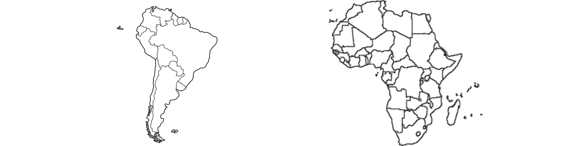

COMPARAÇÃO AMÉRICA DO SUL E ÁFRICA

SEMELHANÇAS:
-
Diversidade Geográfica:
Tanto a África quanto a América do Sul são caracterizadas por uma grande diversidade geográfica,
incluindo planícies, montanhas, desertos, florestas tropicais e savanas.
-
Riqueza em Recursos Naturais:
Ambos os continentes possuem uma abundância de recursos naturais, como minerais, petróleo, gás natural,
terras férteis e uma variedade de espécies animais e vegetais.
-
Climas Variados:
Tanto na África quanto na América do Sul, é possível encontrar uma ampla variedade de climas, que vão
desde o equatorial até o temperado, devido à sua extensão geográfica e à presença de diferentes
formações geográficas.
-
Culturas Diversificadas:
Ambos os continentes abrigam uma grande diversidade de culturas, idiomas, costumes e tradições,
resultado da presença de numerosos grupos étnicos ao longo de suas histórias.
DIFERENÇAS:
-
História e Colonização:
A história de colonização e interações com povos estrangeiros diferem entre os dois continentes. Enquanto a América do Sul foi colonizada principalmente por países europeus, como Espanha e Portugal, a África sofreu com uma colonização mais ampla, envolvendo várias nações europeias.
-
População e Densidade Demográfica:
A América do Sul tem uma população menor em comparação com a África, e a densidade demográfica geralmente é mais baixa na América do Sul, com exceção de áreas urbanas específicas.
-
Desenvolvimento Econômico:
A América do Sul tem uma população menor em comparação com a África, e a densidade demográfica geralmente é mais baixa na América do Sul, com exceção de áreas urbanas específicas.
-
Idiomas Dominantes:
Embora ambos os continentes sejam caracterizados por uma grande diversidade linguística, os idiomas dominantes diferem. Na América do Sul, os idiomas predominantes incluem o espanhol e o português, enquanto na África há uma gama mais ampla de idiomas, incluindo árabe, inglês, francês, swahili e muitos outros.
Saiba mais sobre os continentes: